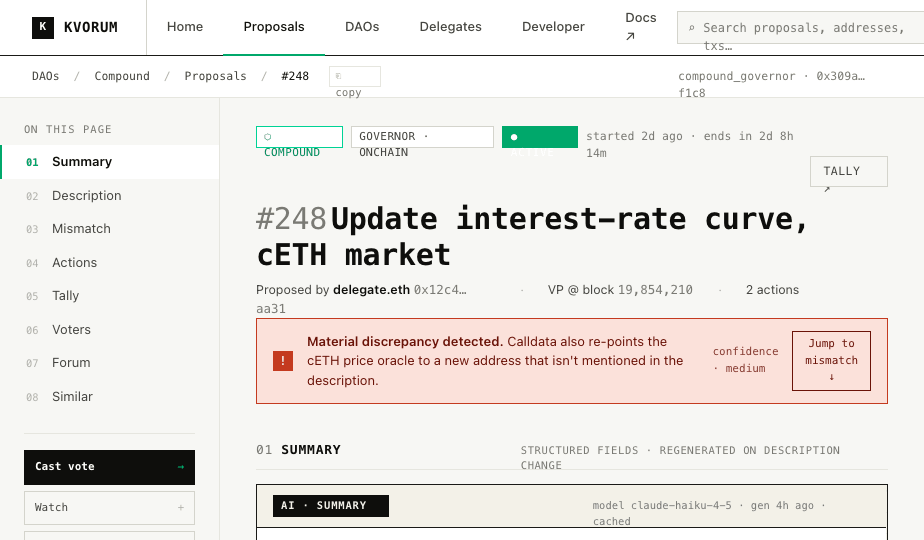

READMEKvorum — design handoff
Multi-DAO governance dashboard. Squared-off, mono-headline, info-dense. AI output is fenced; severity is exactly three colors; borders not shadows. Built to be ported to Next.js + CSS Modules. 11 primary screens at hi-fi · 3 phones at hi-fi.
01Start with
02Hi-fi screens
All eleven primary screens fully promoted to hi-fi. Every page consumes design-system/tokens.css + design-system/components.css — light/dark theme, squared-off, mono-headline. The proposal detail is the exemplar; everything else inherits its language.
Proposal detail
The exemplar. Top nav, breadcrumb, sticky TOC, AI summary, markdown description, mismatch analysis, action calldata, live tally with quorum, voter table, forum synthesis, similar proposals. Light + dark theme.

live · click to open03Wireframes (reference)
All primary screens are now hi-fi (desktop + mobile). These wireframes are kept as a reference for information-architecture decisions and cross-cutting state coverage.
/hifi/v1-etherscan/homepage.html.
/Homepage Wireframe.html
§6.5Proposals list ↗
Proposals · lo-fi
Lo-fi reference. Hi-fi version: /hifi/v1-etherscan/proposals.html.
/Proposals List Wireframe.html
§6.8Search ↗
Search results
Cross-entity search with filters by type (proposal, address, DAO).
/Search Results Wireframe.html
§6.10Delegate / actor profile ↗
Actor profile
Delegate page: voting power, voting record, rationales, conflicts.
/Actor Profile Wireframe.html
§6.11Forum thread ↗
Forum view
Embedded forum thread with synthesized roster + sentiment.
/Forum Thread Wireframe.html
§6.12API docs ↗
API reference
Developer-facing API documentation with try-it-out console.
/API Docs Wireframe.html
§6.13Developer dashboard ↗
Dev dashboard
API keys, usage charts, webhooks, integrations.
/Developer Dashboard Wireframe.html
§6.14Auth ↗
Sign in / up
Email + wallet sign-in, signature flow, error states.
/Auth Pages Wireframe.html
—Empty / error / loading ↗
State coverage
Empty, loading, error, degraded, rate-limited states for every key surface.
/States Wireframe.html
—Mobile lo-fi ↗
Mobile breakpoints (lo-fi)
Phone + tablet layouts for the key screens. Hi-fi version now at hifi/v1-etherscan/mobile.html.
/Mobile Breakpoints Wireframe.html